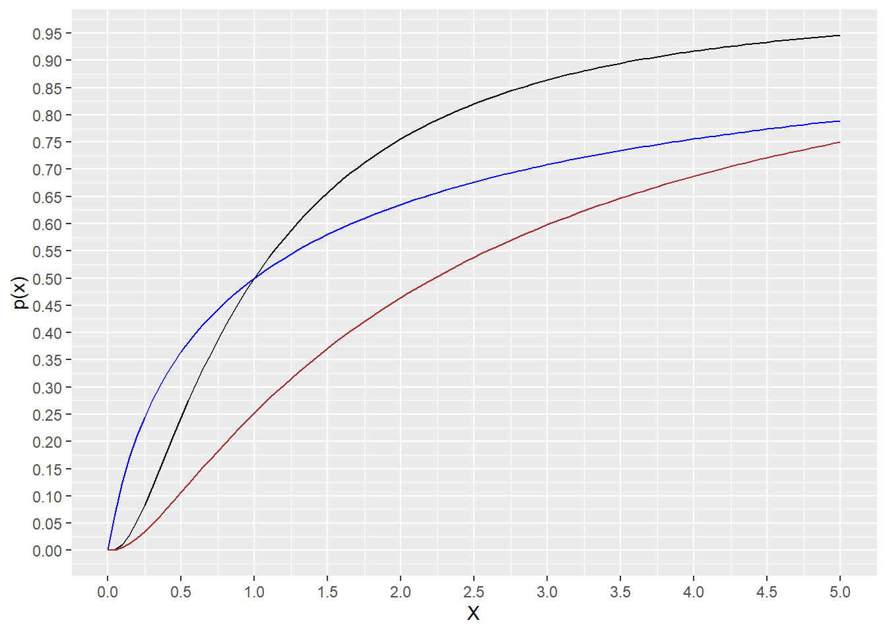
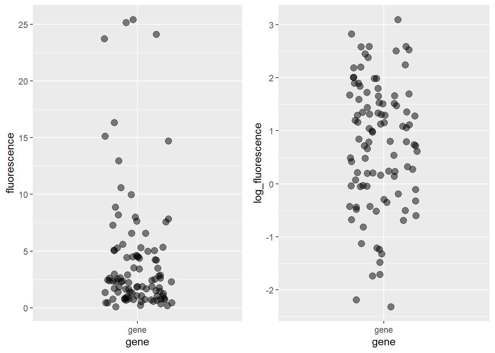

Chapter 16 The Normal Distribution
16.0.1 The Standard Normal
If the variable \(X\) represents a population of normally distributed values with a mean \(\mu\) and standard deviation \(\sigma\), then the variable \(Z\) \[Z=\frac{X-\mu}{\sigma}\] has a standard normal distribution with a mean of 0 and a standard deviation of 1.
Converting experimental sample data to standard normal z-scores is very common. Assume we have a sample of 210 peoples heights, whose sample mean = 169.9 and sd = 10.5.
The tallest height in the sample is 205. The z-score of the tallest individual is derived using the sample parameters and is (205-169.9)/10.5 = 3.34.
The z-score could be interpreted this way: the tallest individual is said to be 3.34 standard deviations taller than the mean height of the students in the sample.
16.1 dnorm
dnorm is the normal probability density function in R: \(p(x)=\frac{e^\frac{-(x-\mu)^2}{2\sigma^2}}{\sigma\sqrt{2\pi}}\)
dnorm takes i) the scalar \(x\), ii) a mean and iii) sd as arguments and returns the value of the probability, or otherwise known as the probability density, for that scalar. \(x\) can be either a single value, or a vector comprised of many values.
For example, assume the average height of an adult in the US is 168.8 cm with a standard deviation of 7.1 cm.
Use dnorm to calculate the probability that a randomly selected US adult will be 176 cm tall:
## [1] 0.03360041Therefore, the probability that a randomly selected US adult would be 176 cm tall is 3.36%.
The probable height of one specfic individual is usually not very useful or interesting to calculate. What’s a bit more useful is to see how the function operates over a range of values.
For example, we can model the distribution of adult heights using dnorm. We might be interested in the fraction of adults whose heights are 176cm and taller compared to the rest of the population.
To illustrate the answer with a plot, we pass a range of x values range = c(130, 210) into the dnorm function, rather than a single value. dnorm calculates probabilities over that full range. We can make a plot to visualize the answer, shading anybody as tall or taller than 176 in blue:
range <- c(130,210)
pop <- list(mean=168.8, sd=7.1)
auc <- c(176,210)
ggplot(data.frame(x=range), aes(x)) +
stat_function(fun=dnorm, args = pop, color = "red") +
stat_function(fun=dnorm, args = pop, xlim = auc, geom="area", fill="blue") +
xlab("heights, cm") + ylab("p(heights)")Later on, we’ll use other functions to quantify the blue shaded area.
Here’s plot of the standard normal distribution over a range of z-values that are 4 SD’s below and above the mean:
z <- seq(-4,4,0.1)
mean <- 0
sd <- 1
df <- data.frame(z, pz=dnorm(z, mean, sd))
ggplot(df, aes(x=z,y=pz)) +
geom_line(color = "red") +
xlab("z") +
ylab("p(z)") +
labs(title = paste("dnorm","(","mean=", mean,",","sd=",sd,")"))
16.2 pnorm
When a height value is given, calculating the probabilities for heights up to or greater than than that limit can be of considerable interest.
pnorm is the R function for that…give it the value of a normally-distributed variable, such as height, and it returns a cumulative probability for the distribution on either side of that value.
Thus, pnorm is called the normal cumulative distribution function in R:
\[p(x)=\int^x_{-\inf}\frac{e^\frac{-x^2}{2}}{\sqrt{2\pi}}\]
By default pnorm will return the cumulative value of the normal pdf up to the value of the input scalar. In otherwords, given the value of a variable, pnorm returns the probability of that value or less.
However, this can be reversed by changing to the lower.tail=FALSE argument. In this case, pnorm returns something akin to a p-value. Given some value of a variable, pnorm returns the probability of that value or greater.
The first line in the script below calculates the probability that a US adult will be less than or equal to 175.9 tall, which in this instance turns out to be 1 sd taller than the mean height. It returns a value of about 84%.
The second line calculates the probability that a US adult will be greater than or equal to 175.9 cm tall. It returns a value of about 16%.
## [1] 0.8413447## [1] 0.1586553Subtracting the latter from the form illustrates that about 68% of US adults will be within 1 standard deviation of the average US adult height:
## [1] 0.6826895About 95% of the values for any continuous, normally-distributed variable will be between 2 standard deviations of the mean:
## [1] 0.9772499## [1] 0.02275013## [1] 0.9544997(The script above illustrates a few of the different shorthands that can be taken working with R’s probability functions).
Calculating “p-values”" using pnorm
Let’s go back to human heights. What’s the probability of an US adult being as tall or taller than 205 cm? Notice the lower.tail=F argument:
## [1] 1.71095e-07That’s a very low probability value, because the height is so extreme.
Calculating percentiles using pnorm
What is the height percentile of a 205 cm tall US adult?
## [1] 99.9999816.3 qnorm
qnorm is the inverse of the cumulative distribution function of a continuous normally-distributed variable.
By default, qnorm takes a cumulative probability value (eg, a percentile) as an argument (along with the mean and sd of the variable) and returns a limit value for that continuous random variable.
Here’s what the qnorm distribution looks like:
p <- seq(0.0, 1.0, 0.01)
mean <- 0
sd <- 1
df <- data.frame(p, z=qnorm(p, mean, sd))
ggplot(df, aes(p, z)) +
geom_line(color = "red") +
xlab("p(z)") +
ylab("z") +
labs(title = paste("qnorm","(","mean=", mean,",","sd=",sd,")"))
You’re probably very familiar with quantiles since percentiles are a class of quantiles. For example, if your standardized exam score is in the 90th percentile, then you did as well or better than 90% of test takers.
If you forgot your score, but remember your percentile, you could use qnorm to return your specific test score…so long as you also know the mean and sd values of the test scores.
Back to heights.
What’s the height in cm of a US adult who is at the 99th percentile? What about the 5th percentile?
## [1] 185.3171## [1] 157.1215The first script below returns the height of the 84th% quantile of US adults. 84% are about 175.9 cm tall or less. The 84th is the upper 1 SD quantile.
The second script returns the height of the complement of the 84th quantile of US adults, by switching the default lower.tail argument. This complement is the lower 1 SD quantile.
## [1] 175.8607## [1] 161.7393About two thirds of US adults are between 161.7 and 175.9 cm tall.
16.3.0.0.1 Confidence interval limits and qnorm
The qnorm distributon has pragmatic utility for finding the limits for confidence intervals when using the normal distribution as a model for the data.
In a standard normal distribution, the limits for the lower and upper 2.5% of the distribution are about \(\pm\) 1.96 standard deviation units. Thus, the 95% confidence interval for standard normal z-values is -1.96 to 1.96.
## [1] -1.959964## [1] 1.959964Based upon the average height and sd of US adults, the 95% confidence interval for US adult height is:
## [1] "154.9 to 182.7"The confidence interval means there is a 95% chance the true average US adult is within that range.
Rember that height sample from near the very start of this document?
It had 210 replicates, a mean = 169.9, sd = 10.5.
What is the 95% confidence interval of US adult heights, based upon that sample?
## [1] "149.3 to 190.5"Drawing inference to the whole population on the basis of this sample, and assuming a normal model, there is a 95% chance the true US adult height is within this slightly wider range.
The truth is, a better model to derive confidence intervals for normally-distributed samples is the t-distribution.
16.4 rnorm
R’s rnorm is the random number generator function for the normal distribution. This has a lot of utlity in synthesizing data sets, for example, when running simulations.
It returns random normally distributed values given size, mean and standard deviation arguments.
For example, here is a randomly generated sample of 10 US adult heights, rounded to 1 significant digit.
We’ll use this function a LOT in this course to generate normally-distributed data for various purposes.
Here’s 10 random, simulated heights of US adults, rounded to the first digit to make it cleaner looking:
## [1] 170.8 159.6 168.3 159.6 177.2 175.0 172.6 166.5 165.7 165.116.4.1 Plotting histograms of some rnorm samples
Histograms are a powerful way to explore the underlying structure in a dataset. They are a descriptive tool. Adjusting the bin parameters provides a way to evaluate the data.
A histogram takes one variable, plotting its values on the x-axis while displaying the counts or the density of those values on the y-axis. The distribution of the data in a histogram is controlled by adjusting the number of bins, or by adjusting the binwidth.
16.4.2 Bins and Binwidth
Think of bins as compartments.
If using, for example 100 bins as a plotting argument, the range of the sample values are split, from the shortest to the tallest heights, into 100 evenly spaced…compartments. For normally distributed variables, the central bins are more dense or have more counts then those on the tails of the histogram, because values near the average are more common.
A binwidth argument can be used instead of bin. Setting the binwidth to 10 on the graph below would look the same as setting the number of bins to 6.
Adjusting bins or binwidths has the effect of rescaling the y-axis.
16.4.2.1 Histograms of counts vs density
Because histograms are so commonggplot2 has a geom_histogram function to simplify creating the plots. The default argument creates a histogram of values of a random variable of interest. To create a histogram of densities, use a density aes argument in the function, instead as you’ll see below.
Counts are the number of cases within a given bin. Density is the fraction of all counts within a given bin.
Here are 1000 random, simulated heights, plotted as a histogram of counts.
set.seed(1234)
df <- data.frame(s=rnorm(n=1000, mean=168.8, sd=7.1))
ggplot(df, aes(s)) +
geom_histogram(bins=100)
Same thing, plotted as a probability density:
set.seed(1234)
df <- data.frame(s=rnorm(n=1000, mean=168.8, sd=7.1))
ggplot(df, aes(s)) +
geom_histogram(aes(y = ..density..), bins=100)
16.4.2.2 Histogram with Distribution
For an example of plotting a model along with the raw data, here’s a density histogram of the rnorm sample, plotted along with a dnorm distribution model, given the population mean and sd.
By eyeball, the model seems to be a decent fit for the sample. But it is not a perfect fit.
It’s not the model’s fault. Models are perfect, data are not.
How does the sample size affect how well the model fits the data?
set.seed(1234)
df <- data.frame(s=rnorm(n=1000, mean=0, sd=1))
ggplot(df, aes(s)) +
geom_histogram(aes(y = ..density..), bins=100) +
stat_function(fun = dnorm,
args=list(mean=0, sd=1),
color = "red", size = 2)